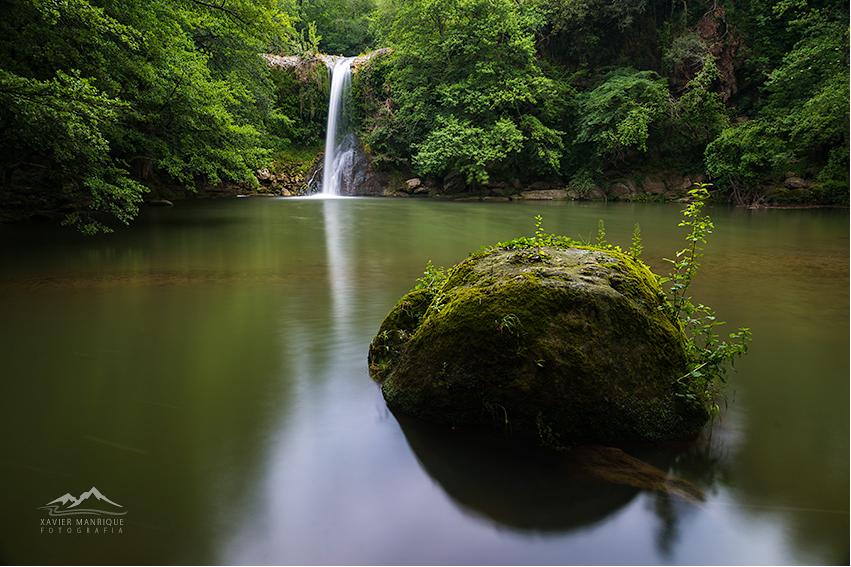

Gorg

Autor: Xavier Manrique Peribañez
Año de publicación: 2016
Comentrio del autor:
Hola a todos. Después de unas semanas de mucho
ajetreo preparando la presentación de mi primer libro "Encisos i Guspires" e inauguración de mi exposición "Brogits"
subo este imagen realizada hace unos días en una preciosa poza de la comarca de La Garrotxa.
Critica:
Los protagonistas en su sitio y el bolo, que curioso,
su parte en sombra ocupa el lugar de luz de la poza y su perfil con luz en la sombra de la poza, detalles que te
sugieren un cuidadoso recorrido por esta bella imagen.